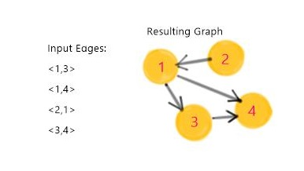

Load public data, create a graph and run a library method
Here comes Gelly
We start delving into Gelly by focusing on the following three concepts in this tutorial:
- Graph representation
- Graph creation from public data
- Running a Gelly library method
Some Basics
A Graph is represented by two DataSets: Vertices and Edges. Vertices and edges might or might not have associated values. Let’s see some examples:
//creates a vertex with long Id and String value
Vertex<Long, String> v1 = new Vertex<Long, String>(1L, "foo");
//creates an edge with double value
Vertex<Long, String> v2 = new Vertex<Long, String>(2L, "goo");
//creates an edge without a value
Edge<Long, Double> e = new Edge<Long, Double>(1L, 2L, NullValue);Graph datasets are often available as a single list of edges. In this case, Gelly can read only the edge input and automatically infer the graph vertices.

Create a graph from public data
Let’s see how to create a graph in practice! For this series of tutorials, we are going to use the twitter dataset fromkonect. In the network page, you can find several properties and measurements about this dataset. It is a directed, unweighted network with 23370 vertices and 33101 edges. Let’s get the dataset and try to reproduce some of these results with Gelly!
Step1: Go to the webpage and download the TSV edges file
Go to the webpage and download the TSV edges file. The file is quite small and you can easily open it and check it out on your laptop. You will see that the first two lines start with “%” and contain information about the data. Next, each line represents an edge and Ids are separated by a space character:
% asym unweighted
% 33101 938 22964
1 2
1 3
1 4
1 5
...
Step2:Load the data in a Flink DataSet
We will use Flink’s readAsCsv method to read the edge data and create an edges DataSet. Flink’s CSV reader has convenient methods that let us:
- Define the line delimiter. In our this is the delimiter that separated edges, ‘\n’.
- Define the field delimiter. In our case this is the space character ‘ ’ that separates the edge Ids.
- Ignore comments; lines that start with a certain character. Using this feature, we can instruct Flink to ignore the first 2 lines of the file. Define the field types. We will read the edge Ids as Longs.
//read a file and creates a DataSet of Tuple2
DataSet<Tuple2<Long, Long>> edgeTuples = env.readCsvFile(args[0])
.fieldDelimiter(" ")
.lineDelimiter("\n")
.types(Long.class, Long.class);
Step3: Create a Graph
Since the Twitter graph has no edge values, we are going to set them to NullValue when creating the edges DataSet. We can easily do this by applying a map function to the DataSet we have just read:
DataSet<Edge<Long, NullValue>>= edgeTuples.map(new MapFunction<Tuple2<Long, Long>, Edge<Long, NullValue>>() {
public Edge<Long, NullValue> map(Tuple2<Long, Long> value) {
return new Edge<Long, NullValue>(value.f0, value.f1,
NullValue.getInstance());
}
});
Now we are ready to create the Graph! We are going to use Gelly’s fromDataSet method, which will induce the vertices directly from the edges. In this method, we can also provide a mapper to create the vertex values. The mapper gives us the vertex Id as a parameter and lets us set the vertex value to an arbitrary value. This allows us to create the graph and initialize the vertex values in one step! For our example, we will set the vertex values to 1.0, in order to later run the PageRank algorithm on the graph.
//use the edges DataSet to create a Graph
Graph<Long, Double, NullValue> graph = Graph.fromDataSet(links, new MapFunction<Long, Double>() {
//mapping function to initialize vertex values to 1.0
public Double map(Long value) throws Exception {
return 1.0;
}
}, env);
Running a library method

Gelly provides a collection of graph algorithms for easily analyzing large-scale Graphs. The library methods can be used by simply calling the run() method on the input graph. For example, to execute the PageRank Algorithm on our graph we call the run method as follows:
DataSet<Vertex<Long, Double>> pageRanks = graph.run(
new PageRankAlgorithm<Long>(DAMPENING_FACTOR, maxIterations)).getVertices();
It was that easy
We have learnt how to create a Graph in Gelly from a given input data set. In the next tutorial, we will get to know some details regarding the Graph we have just created.